For each tool, this guide walks down the page top-to-bottom — methodology dropdown (if any), diagram, the input fields you'll fill in (with what each one means in plain English), and the output fields you'll see (with what they actually tell you). A companion to the User Manual reference; this one is the walkthrough.
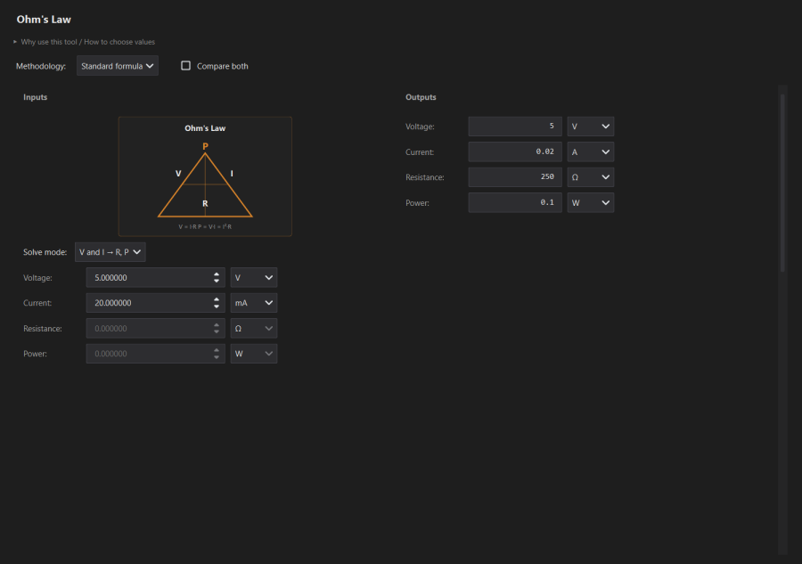
No methodology dropdown — the four equations are linked, so any two known inputs give you the other two.
The page has four entry fields side-by-side; type whatever you know into any two of them and the other two compute automatically.
The Inputs are:
The Outputs are the same fields, automatically filled. The tool also rounds R to the nearest E12 / E24 standard value so the answer is something you can actually order.
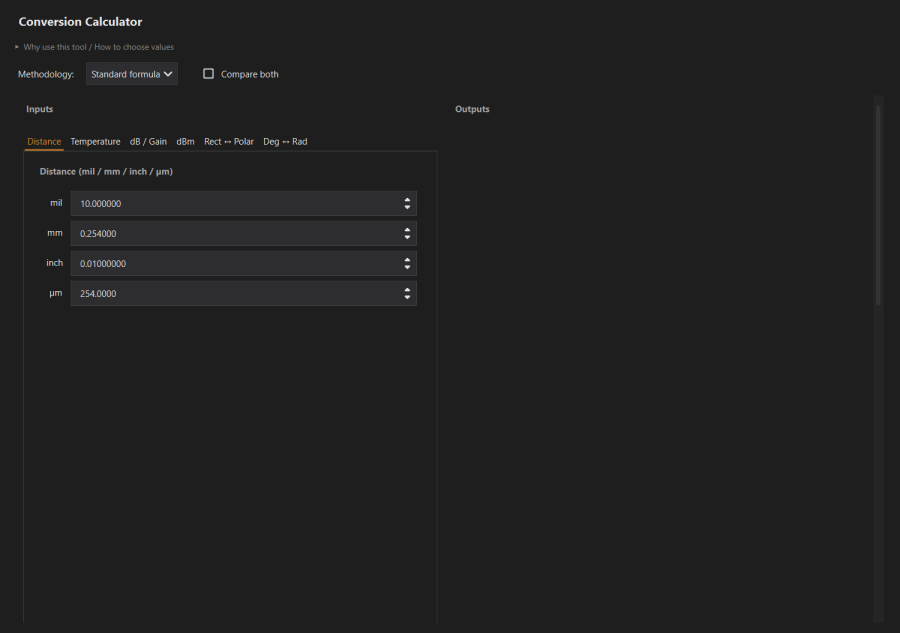
Tabbed page — one tab per conversion domain.
The page is organised into tabs (Distance, Temperature, Power / dBm, Complex / rectangular ↔ polar). Each tab has the source value on the left and the destination on the right; type into either side and the other updates.
Common conversions: 1 mil = 0.0254 mm, 1 inch = 25.4 mm, 0 dBm = 1 mW = 224 mVrms @ 50 Ω, 10 dB = 10× power = 3.16× voltage.
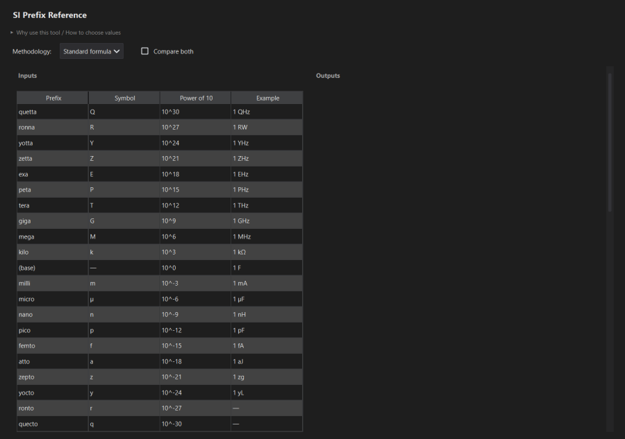
Static reference table, no inputs.
The page is a single table covering every SI prefix from quecto (10⁻³⁰) to quetta (10³⁰) — name, symbol, power of ten, and an example. Use it when you can't remember whether "P" is peta or pico.
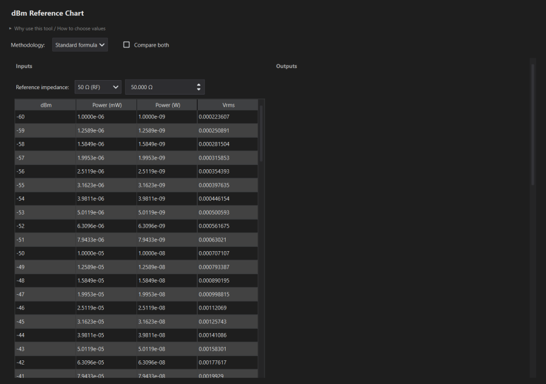
No methodology dropdown.
The Inputs section asks for:
The Outputs section is a pre-computed lookup table from −50 dBm to +40 dBm mapping each dBm level to mW and Vrms across your chosen impedance.
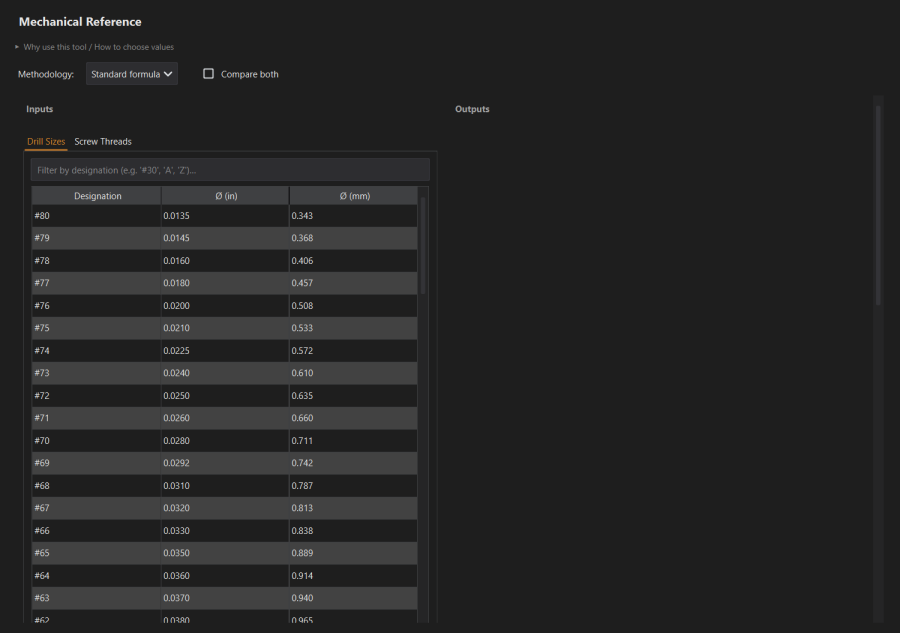
Tabbed page with two reference tables, no calculations.
Tab one is Drill Sizes: every ANSI numbered drill (#80 through #1) and lettered drill (A through Z) with diameter in inch and mm. Tab two is Screw Threads: every UNC size (#00-90 up to 1/4-20) with major diameter, threads-per-inch, and tap-drill recommendation. Each tab has a live filter box — type "30" or "M3" to narrow the list.
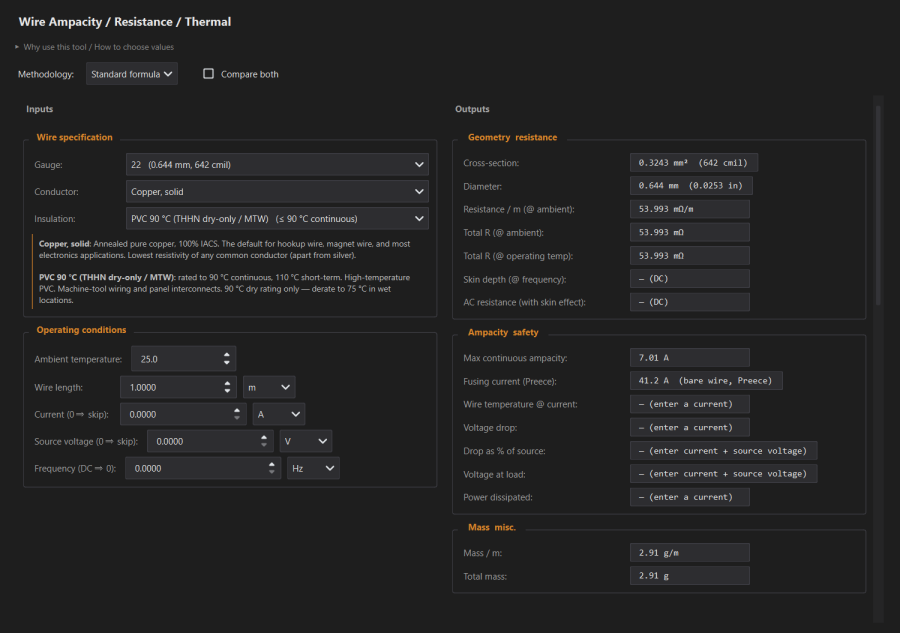
The page is organised into three input groups followed by three output groups.
Wire specification:
Operating conditions:
The Outputs include cross-section, diameter, R/m at ambient, total R at operating temp, max continuous ampacity (colour-coded against the insulation rating), Preece fusing current (catastrophic limit), wire temperature at your current, voltage drop with its % of source, power dissipated, skin depth, AC resistance, mass per metre.
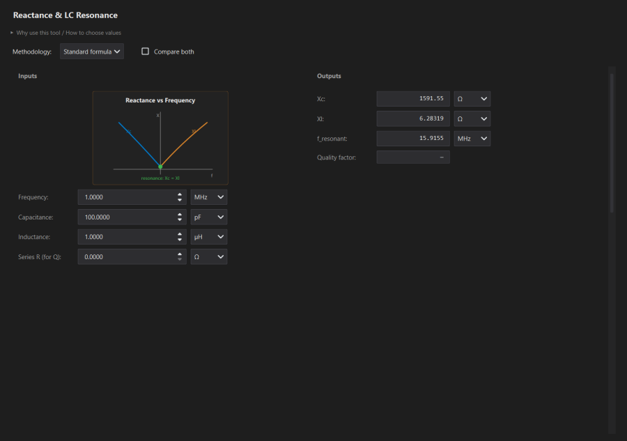
The Inputs are:
The Outputs are Xc (capacitive reactance), Xl (inductive reactance), f_resonant (where Xc = Xl), and the Quality factor.
BW ≈ f₀ / Q.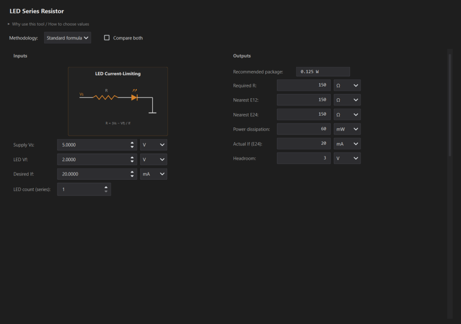
The Inputs section asks for:
The Outputs are the required exact R, both the nearest E12 and E24 standard values, the actual If when using the E24 part, the power dissipated in the resistor, and a recommended resistor package (0603/0805/1206/etc.) based on dissipation.
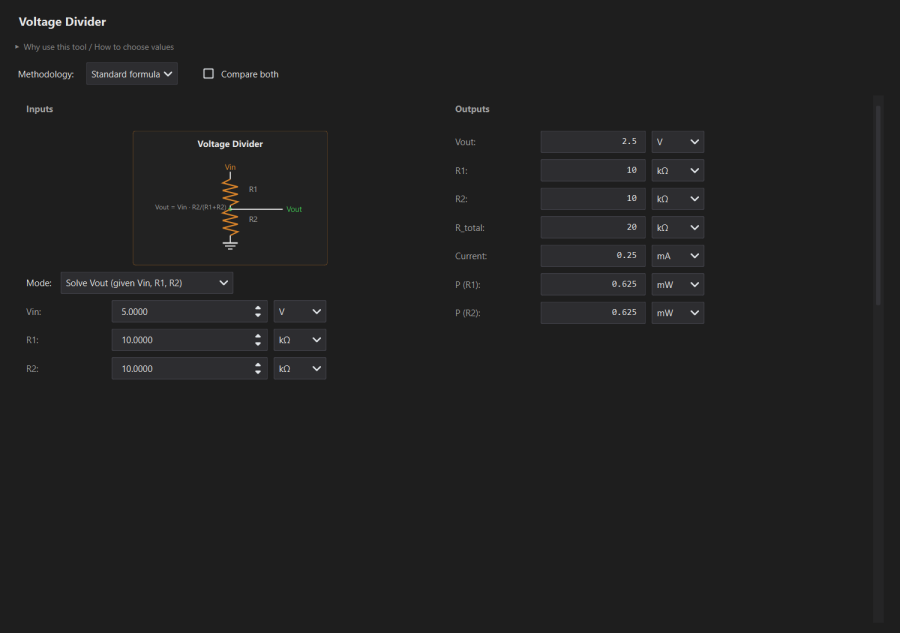
Four-corner solve mode: enter any two of Vin/Vout/R1/R2 and the other two are derived.
The Inputs allow you to fix any two of:
You'll see R_total (loading on the source), Current through the divider, and the power dissipated in each resistor. R1 and R2 outputs are snapped to E12 / E24 standard values.
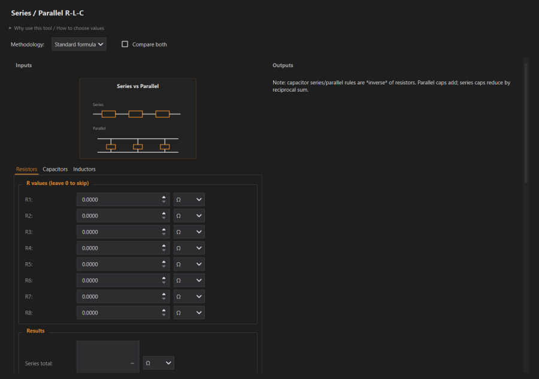
The page is a table where each row is one element. Pick R, L, or C, then enter values one per row up to 8 elements. The Outputs are Series total (values add for R/L, reciprocals for C) and Parallel total (the opposite). Useful when you need an odd value (23.7 kΩ from your stock of standard parts) or want to parallel several resistors to spread power dissipation.
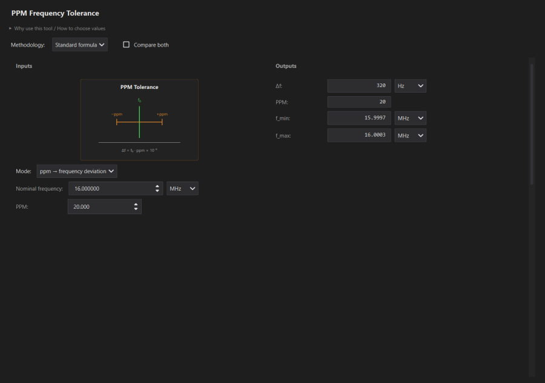
Bidirectional — enter PPM or Δf, get the other.
The Outputs include f_min and f_max (worst-case excursions), plus the reciprocal Δf/PPM number — type either side, read the other.
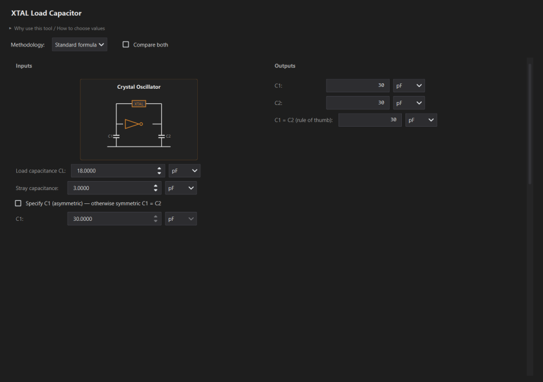
Sizes the two load caps for a Pierce oscillator around a parallel-resonant crystal.
The Outputs are C1 and C2 (the two load caps, normally equal), plus a third line giving the symmetric "rule of thumb" value for reference.
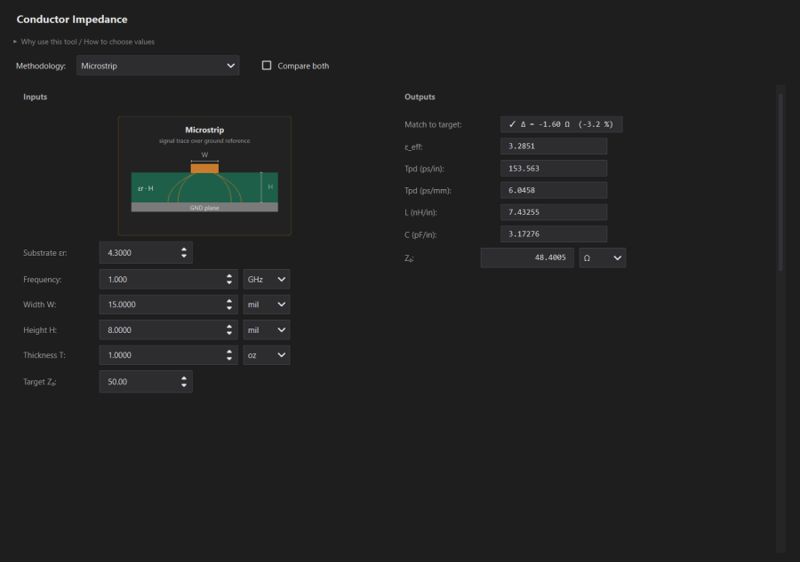
At the top of the page is the Methodology dropdown for picking the topology — Standard Microstrip, Embedded Microstrip, Symmetric / Asymmetric / Dual Stripline, Coplanar Waveguide (with and without backside ground). Each option swaps which input fields are visible.
Below that is the diagram, which changes based on the topology you've picked so you can confirm the geometry visually.
The Inputs section asks for:
The Outputs include Z₀ (characteristic impedance — the answer), ε_eff (the effective dielectric the line "sees"), Tpd (propagation delay in ps/in and ps/mm), and L and C per inch.
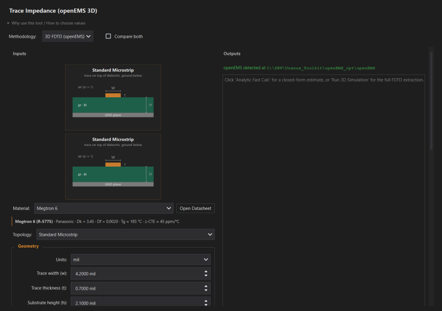
At the top of the page is the Methodology dropdown — currently the only entry is "3D FDTD (openEMS)" — and three large action buttons: Preview 3D Geometry, Analytic Fast Calc, and Run 3D Simulation.
The Inputs are similar to the analytic impedance tool — material (pick from the dropdown of bundled laminates), topology, geometry — but four extra sim-quality controls live in their own group: trace length, convergence target, mesh fineness, and worker thread count.
The Outputs panel shows the analytic answer side-by-side with the 3D FDTD result so you can see the discrepancy. Below the result panel is a status strip that tells you whether openEMS is installed and where.
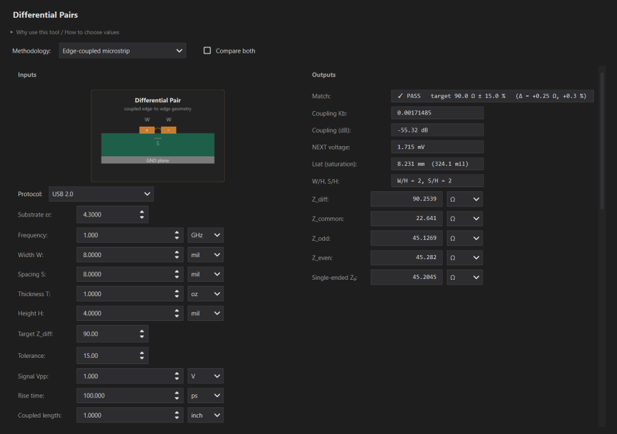
At the top of the page is a topology selector (edge-coupled microstrip / stripline / coplanar, or broadside-coupled stripline). Below is the diagram.
The Inputs cover:
The Outputs are Z_diff, Z_common, Z_odd, Z_even, Coupling Kb (and Coupling in dB), NEXT voltage, the saturation length Lsat, and the W/H / S/H ratios.
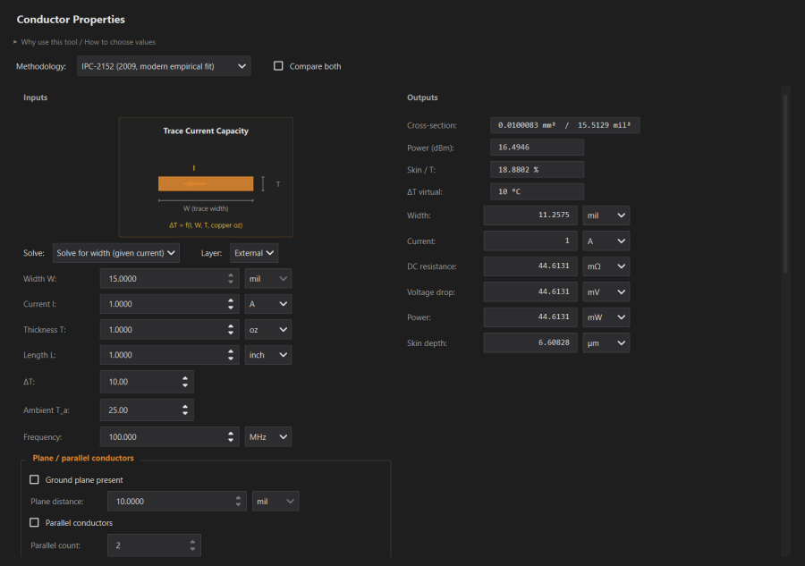
At the top of the page is the Methodology dropdown — "IPC-2152 (2009, modern empirical fit)" or "IPC-2221 (1998, legacy K·ΔT^0.44·A^0.725)". IPC-2152 gives ampacities about 2× higher than IPC-2221 for the same temperature rise; modern designs use IPC-2152.
Below the dropdown is the diagram and then the Inputs:
The Outputs show Cross-section, the recommended Width for your current, DC resistance, Voltage drop, Power dissipated (and dBm), Skin depth, the ratio Skin / T, and ΔT virtual (the "virtual" temperature rise the formula was calibrated against).
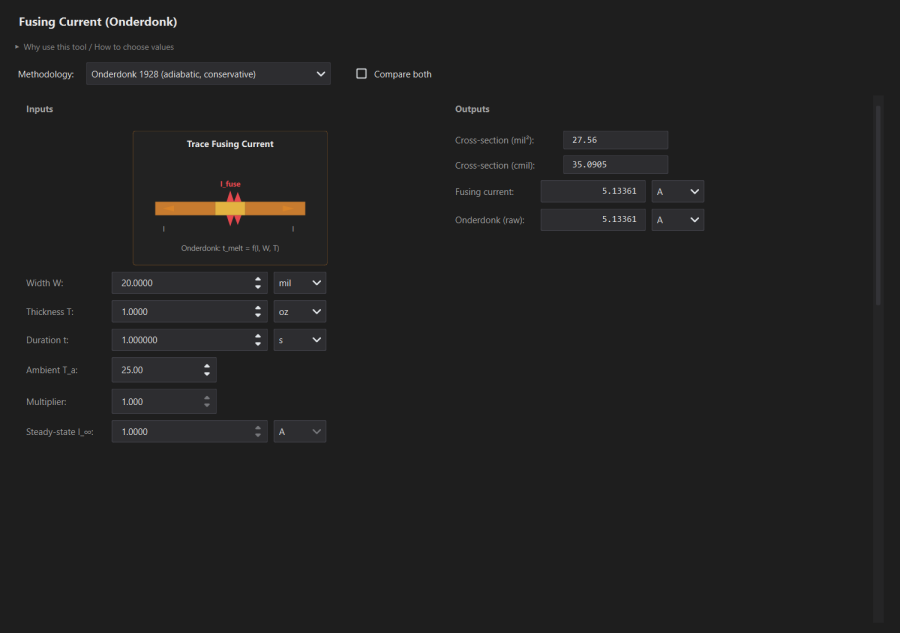
At the top is the Methodology dropdown — "Onderdonk 1928 (adiabatic, conservative)" or "Onderdonk × user multiplier (advisory)" if you want to apply a derating factor.
The Inputs are:
The Outputs are Fusing current at the chosen duration, the raw Onderdonk (raw) number for reference, and the cross-section in both mil² and circular mils.
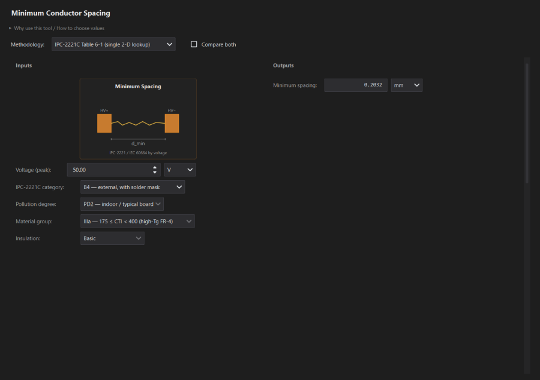
At the top is the Methodology dropdown — "IPC-2221C Table 6-1 (single 2-D lookup)" for board-level signal work, or "IEC 60664-1 Ed.3 (CTI + pollution + insulation)" for safety / mains compliance.
The Inputs are:
The Outputs are Minimum spacing (IPC), or separately Creepage (along the surface) and Clearance (through air) for the IEC method.
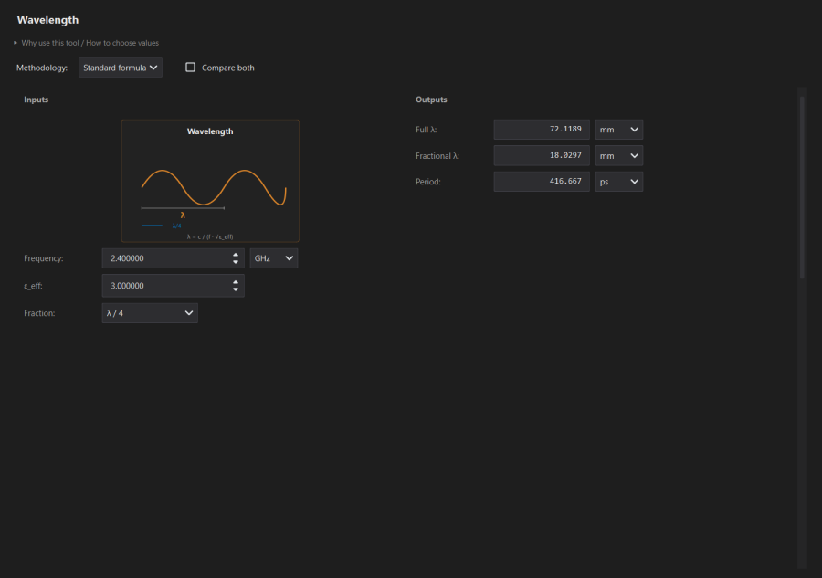
The Inputs are:
The Outputs are Full λ, a list of Fractional λ (λ/2, λ/4, λ/8, λ/10, λ/20), and the Period in nanoseconds. λ/20 is the standard "lumped vs distributed" boundary — anything longer than that on the board needs controlled-impedance treatment.
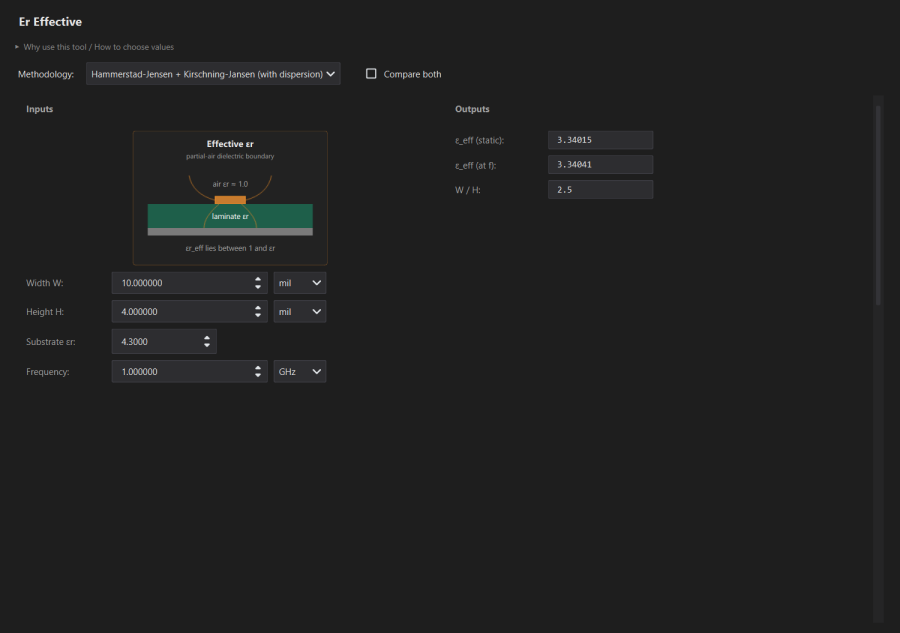
At the top of the page there is no methodology dropdown — only one model (Hammerstad-Jensen static plus Kirschning-Jansen dispersion) is used.
Below the diagram, the Inputs are:
The Outputs show ε_eff (DC) (the low-frequency value, no dispersion correction), ε_eff (f) at your chosen frequency, and the W/H ratio.
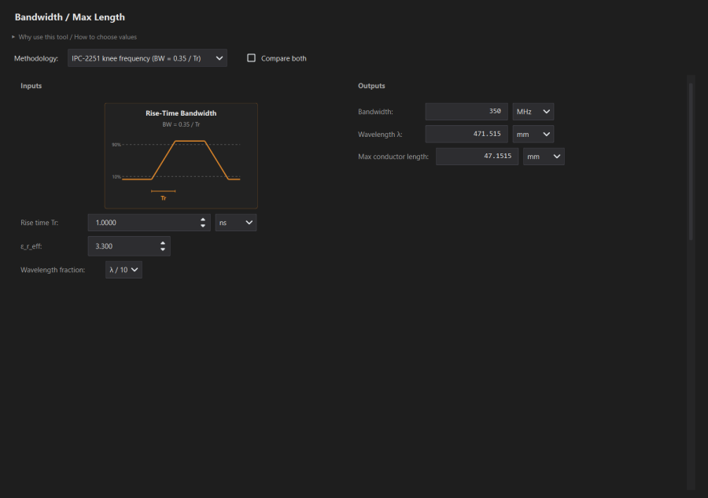
At the top is the Methodology dropdown — "IPC-2251 knee frequency (BW = 0.35 / Tr)", "Howard Johnson (BW = 0.5 / Tr, conservative)", or "Direct frequency entry" if you already know the frequency.
The Inputs are:
The Outputs are the signal's Bandwidth (knee frequency), the Wavelength λ at that frequency, and the Max conductor length before reflections matter (typically λ/6 of the knee).
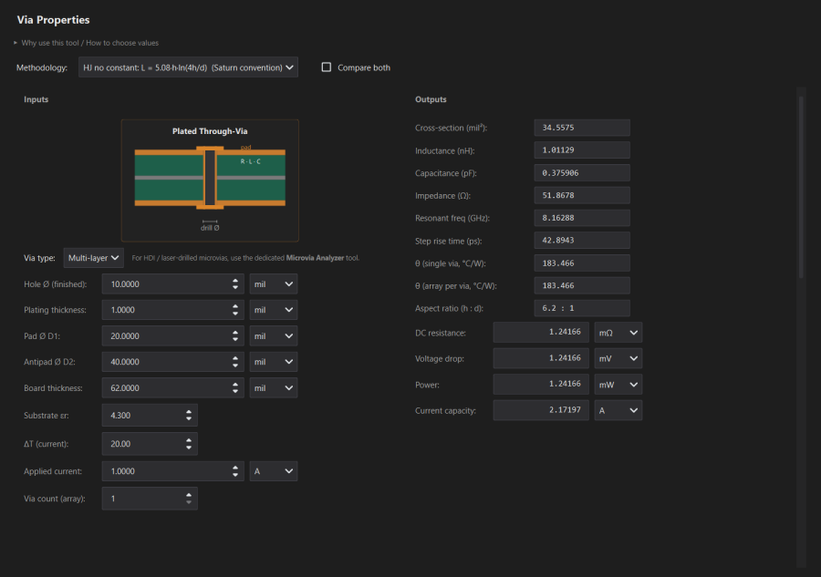
The page starts with a Via type dropdown (Two-layer vs Multi-layer). Microvia analysis lives in its own dedicated tool — there's a pointer to it next to the dropdown.
The Inputs section asks for:
The Outputs cover Cross-section, DC resistance, Voltage drop, Inductance (Howard Johnson), Capacitance, Impedance (Z₀ of the barrel), Resonant freq, Step rise time, Aspect ratio, and the θ (thermal resistance) for one via and for the parallel array.
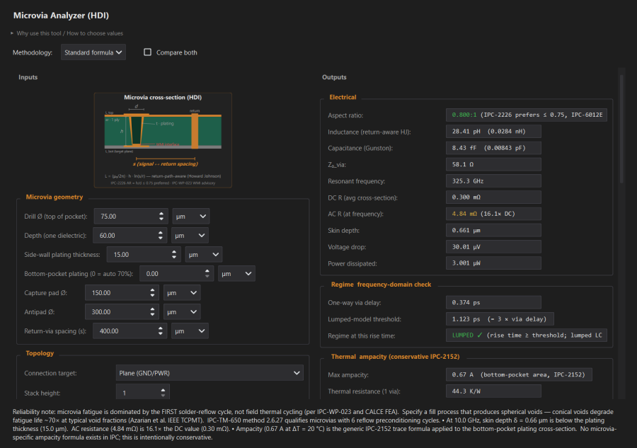
Below the diagram (labelled with d / h / t / s and the WMI interface callout), the Inputs are split into three groups.
Microvia geometry:
Topology:
Operating conditions: substrate εr, ambient, applied current, ΔT for ampacity, frequency (for skin effect), signal rise time (for the lumped-vs-distributed regime check).
The Outputs are split into Electrical, Regime, and Thermal/Ampacity groups, with the inductance using the return-path-aware Howard Johnson form and capacitance via the Gunston elliptic-coaxial formula. Reliability advisories (AR limit, WMI / first-reflow warning) appear in the diagnostics strip at the bottom.
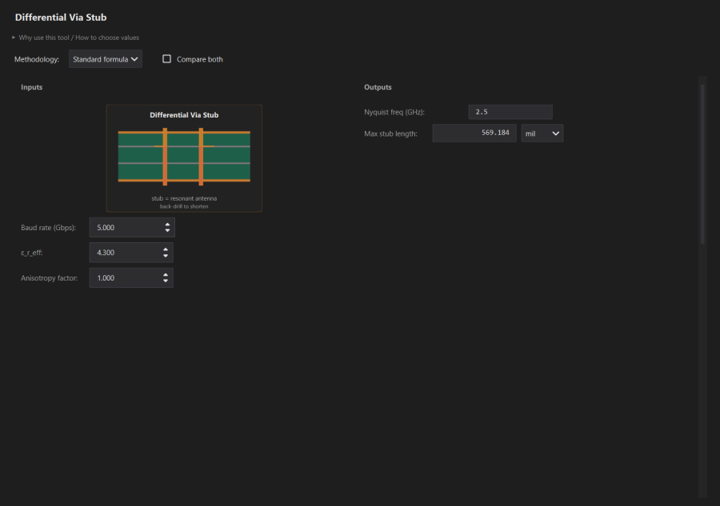
A simple back-of-envelope tool for the max acceptable stub length on a high-speed differential through-via. The Inputs are:
The Outputs are the Nyquist freq (baud / 2 for NRZ) and the Max stub length before the quarter-wave resonance lands inside the Nyquist band.
For a more detailed analysis with S21, eye-closure and budget consumption, use Via Stub Impact in the Signal Integrity category instead.
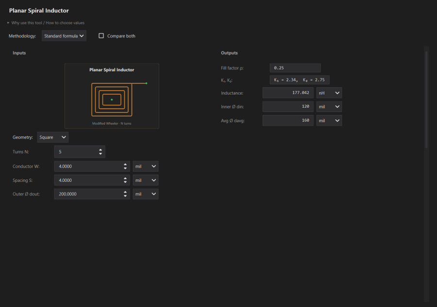
The page picks the shape (square, hexagonal, octagonal, circular) from a selector at the top of the inputs.
The Outputs are Inductance (via Modified-Wheeler 1999), the Inner diameter (back-calculated), the Average diameter davg, the Fill factor ρ, and the shape constants K₁, K₂ used in the formula.
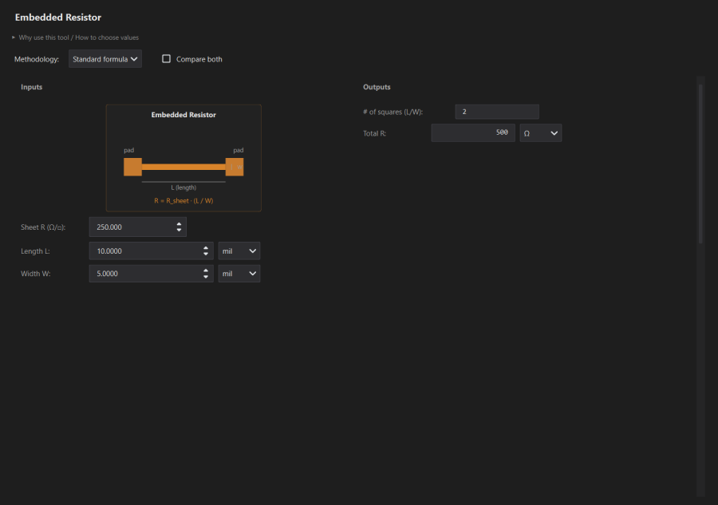
Single-screen tool with three inputs:
The Outputs are # of squares (L/W) and Total R. A 2:1 rectangle on a 50 Ω/sq foil makes a 100 Ω resistor; a 0.5:1 rectangle makes 25 Ω.
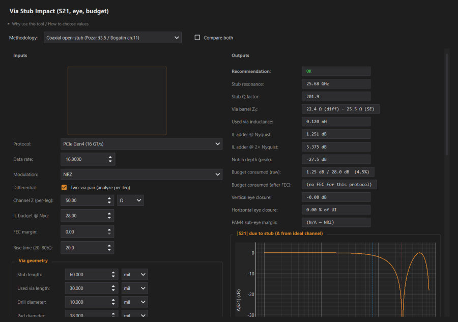
At the top is a Protocol dropdown — pick PCIe Gen3/4/5/6, USB SuperSpeed, 25/50/100 GbE NRZ or PAM4, 112G PAM4, HBM, DDR5, MIPI C-PHY, CXL — and the data rate / modulation / rise time / IL-budget fields auto-populate from the spec.
Below the protocol picker is a Modulation dropdown (NRZ / PAM4 / PAM3) and a Differential checkbox.
The Channel inputs (auto-filled from preset but always editable):
The Via geometry inputs are stub length, used via length, drill / pad / antipad diameters, plating, and (for differential) the via spacing. A Substrate dropdown picks Dk and tan δ from the bundled materials library.
The Outputs include a colour-coded Recommendation ("OK" / "Watch" / "Back-drill recommended" / "Back-drill required"), the Stub resonance frequency, Stub Q factor, Via barrel Z₀, Used via inductance, IL adder @ Nyquist and @ 2× Nyquist, Notch depth, Budget consumed (raw and after FEC), and a plotted |S21| curve.
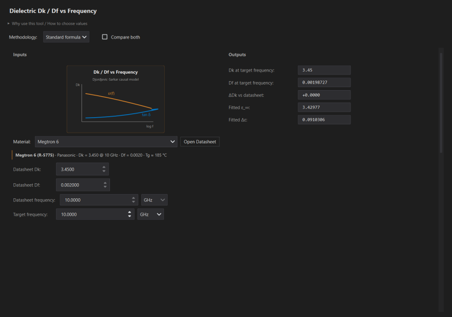
At the top of the page is a Material dropdown — pick Megtron 6/7/8, Rogers RO4350B / RO4003C / RT-duroid, Isola family, AGC family, ITEQ, FR-4 generic, etc. — or "Custom" to enter your own datasheet point. There's also an Open Datasheet button.
The Inputs are:
The Outputs are Dk at target frequency, Df at target frequency, ΔDk vs datasheet, plus the fitted ε_∞ and Δε Djordjevic-Sarkar parameters that drive the wideband model.
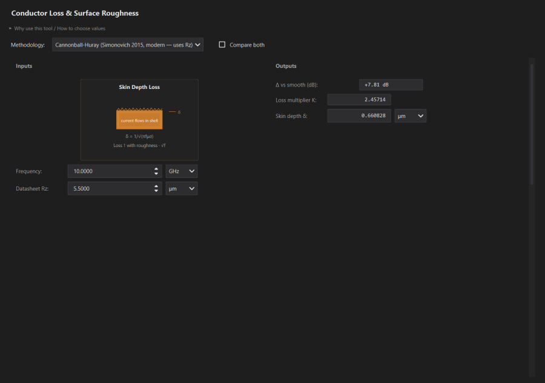
At the top is the Methodology dropdown for the roughness model — Hammerstad-Jensen / Hemispherical / Cannonball-Huray (default).
The Inputs are:
The Outputs are Loss multiplier K (vs smooth copper), Δ vs smooth in dB, and the Skin depth δ.
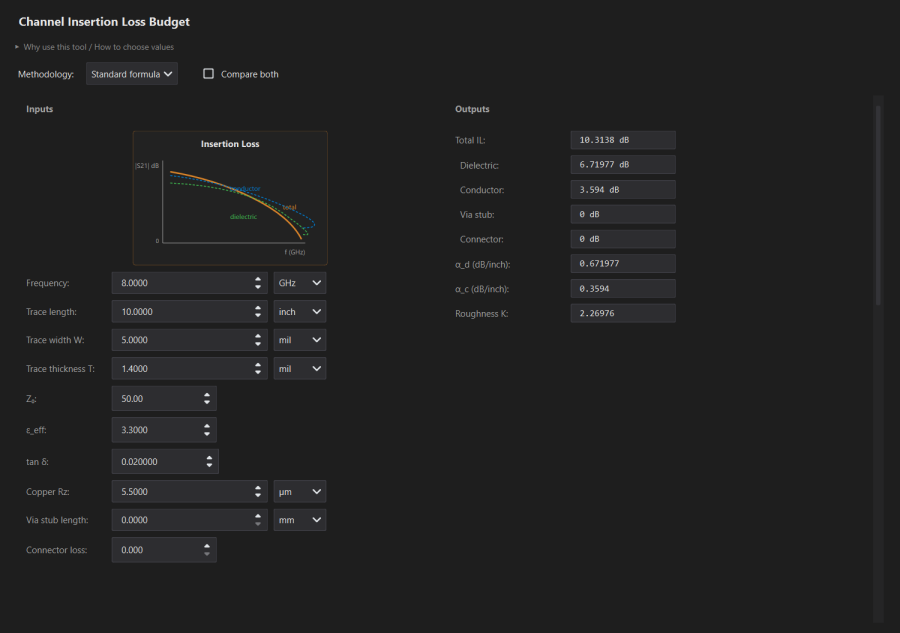
Single-page tool that tallies up dielectric, conductor, stub, and connector loss into one channel IL number.
The Outputs include the Total IL and a per-component breakdown: Dielectric, Conductor, Via stub, Connector. It also reports α_d and α_c in dB/inch and the Roughness K multiplier.
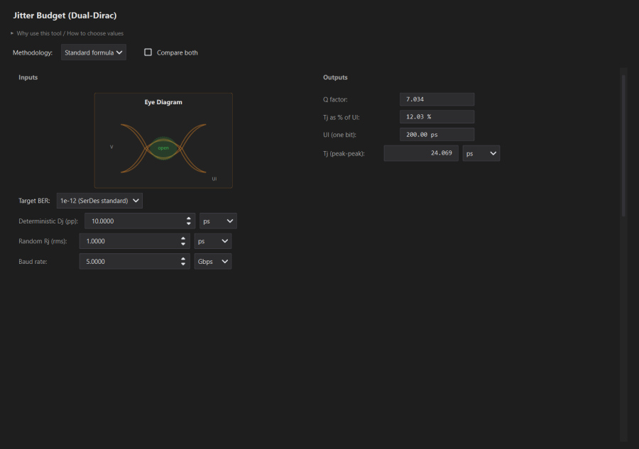
Also picks a target BER (1e-9, 1e-12, 1e-15) which sets the Q factor used in the dual-Dirac math.
The Outputs are Tj (peak-to-peak) — the total jitter at your target BER, UI (one bit), Tj as % of UI, and the Q factor applied.
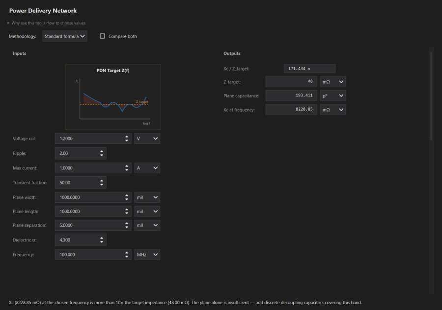
Single-page tool combining target-impedance and plane-capacitance calculation.
The Outputs are Z_target (from V_ripple / I_transient), Plane capacitance (parallel-plate, plane area / spacing × Dk), Xc at frequency (plane impedance at that point), and the Xc / Z_target ratio — the frequency where the planes alone become insufficient and you need discrete decoupling caps.
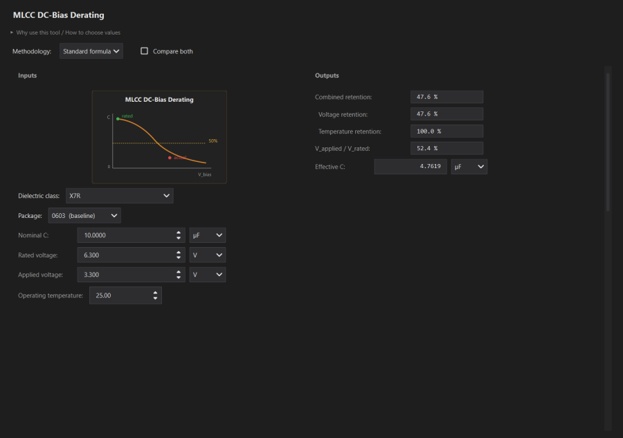
The Outputs are Effective C (what the cap actually delivers under bias), V_applied / V_rated (the % of rated voltage being used), and a Combined retention percentage broken into voltage and temperature retention factors.
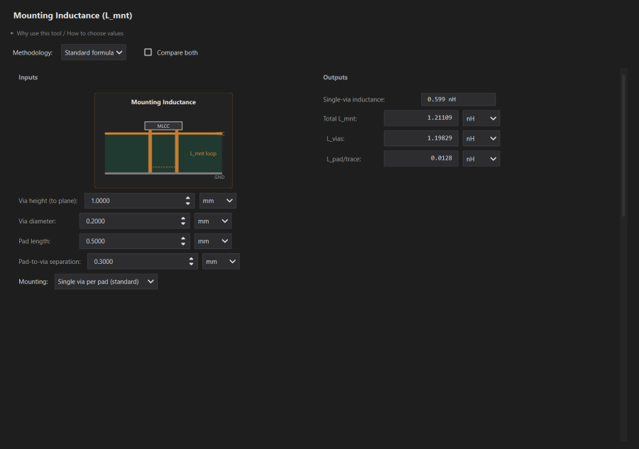
The Outputs include Total L_mnt (the parasitic loop inductance), broken into L_vias and L_pad/trace contributions, plus the Single-via inductance for reference.
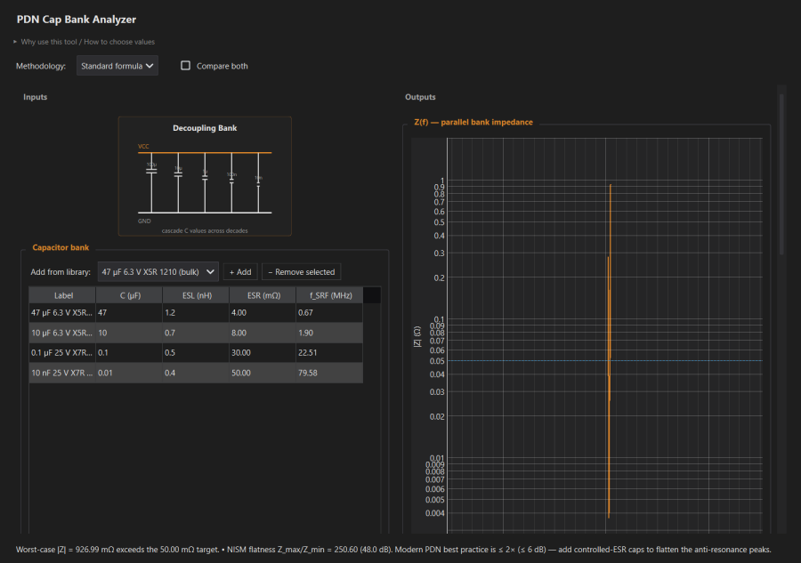
The page has a cap-bank table at the top — add caps from the MLCC library or by hand — followed by the sweep controls.
The Outputs are a |Z(f)| log-log plot with the target line overlaid, plus numerical readouts of the Worst-case |Z|, the NISM flatness Z_max / Z_min ratio, the count and locations of Anti-resonance peaks, and an overall pass/fail Result against the target.
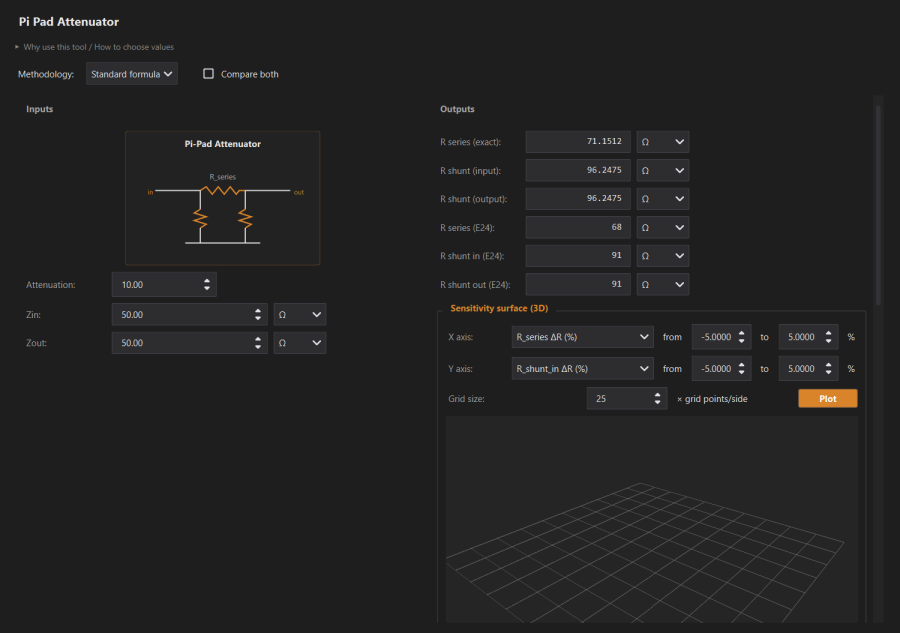
The Outputs are the three exact resistor values (R series, R shunt (input), R shunt (output)) plus each one snapped to the nearest E24 standard value.
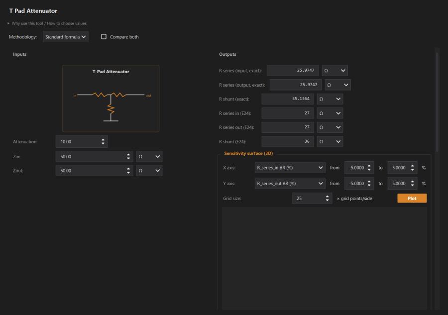
Same Inputs as Pi-Pad — attenuation, Zin, Zout. The Outputs are R series (input, exact), R series (output, exact), R shunt (exact) plus E24-snapped versions of each. T-pads use the dual topology (series → shunt → series) — sometimes a cleaner layout fit than Pi.
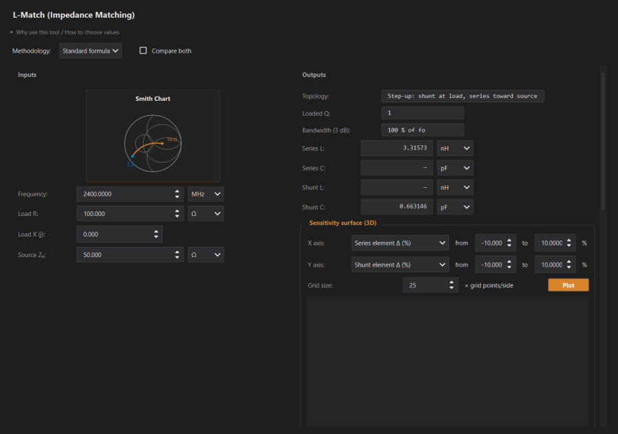
The Outputs are the Topology (which of the four valid L arrangements solves your match), the specific L and C values, the Loaded Q, and the Bandwidth (3 dB).
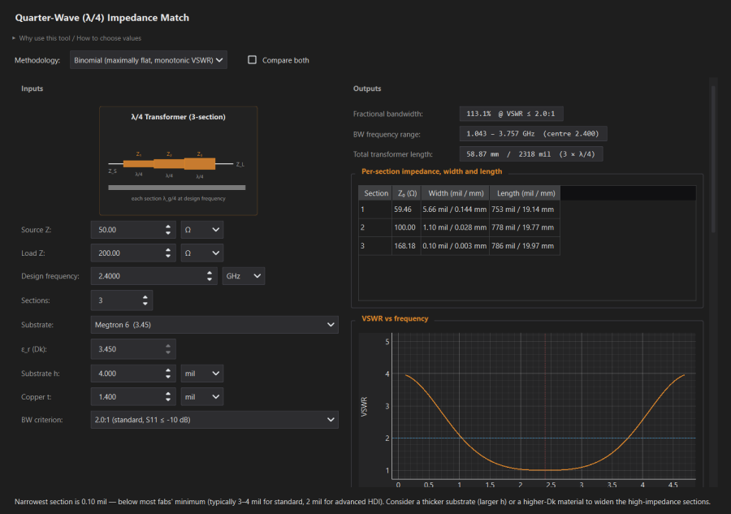
At the top of the page is the Methodology dropdown — "Binomial (maximally flat, monotonic VSWR)" for clean in-band response, or "Chebyshev (equal-ripple, wider bandwidth)" for broader frequency coverage at the cost of in-band ripple.
The Outputs are Fractional bandwidth, the BW frequency range, the Total transformer length, plus a per-section table showing impedance / width / length for every section, and a plot of VSWR vs frequency.
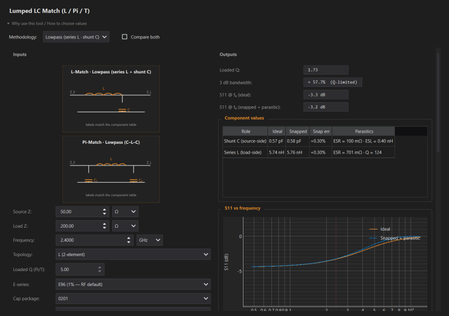
At the top is the Methodology dropdown — "Lowpass (series L · shunt C)" or "Highpass (series C · shunt L)".
The Outputs are the component values, Loaded Q, 3 dB bandwidth, S11 @ f₀ (ideal), and S11 @ f₀ (snapped + parasitic) showing what the real implementation hits after E-series rounding and package parasitics.
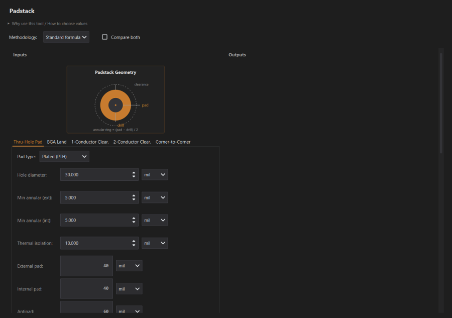
Tabbed page with four sub-tools: thru-hole pad, BGA land, pad clearance, and corner-to-corner pitch. Each tab has its own input set:
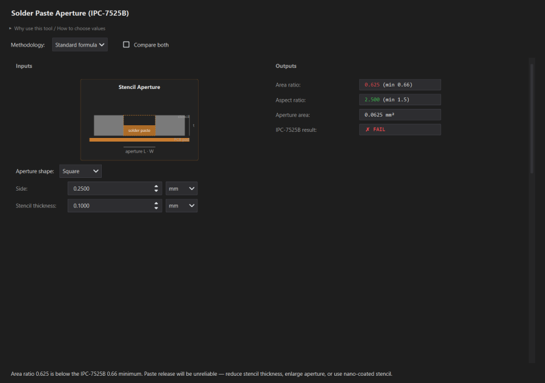
The Outputs are Area ratio, Aspect ratio, Aperture area, and the IPC-7525B result (pass/fail/marginal). Both ratios should be ≥ 0.66 / ≥ 1.5 for clean paste release.
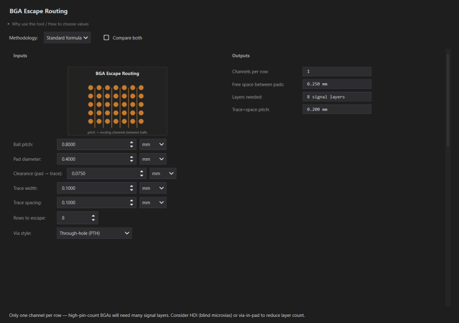
The Outputs are Channels per row (how many traces fit between adjacent balls), Free space between pads, Trace+space pitch, and Layers needed (how many signal layers it takes to fully break out the BGA).
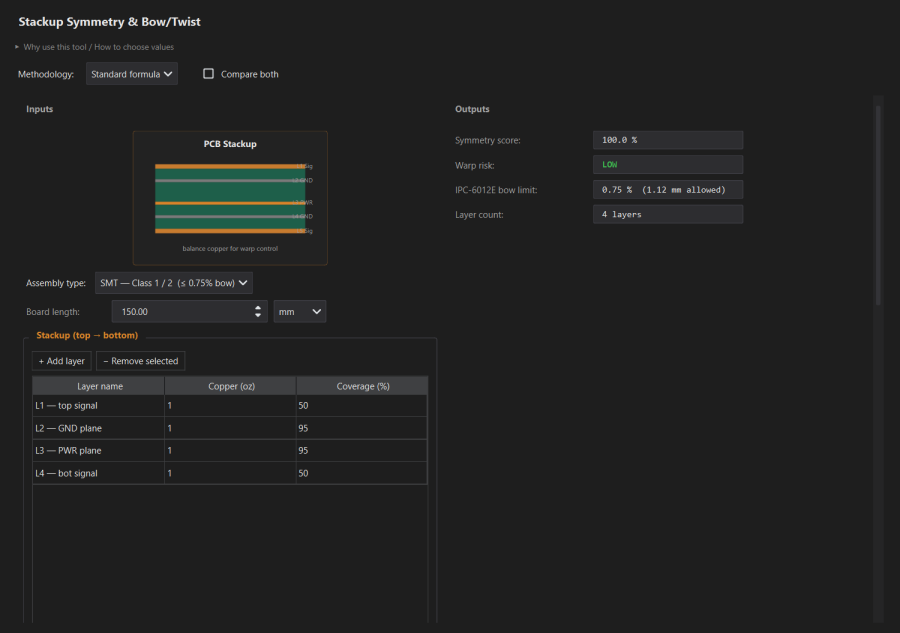
The page is a stackup-editor table where each row is one layer with a copper-coverage percentage. The single non-table Input is:
The Outputs are Layer count, Symmetry score, Warp risk (low/medium/high colour-coded), and the IPC-6012E bow limit for your board size.
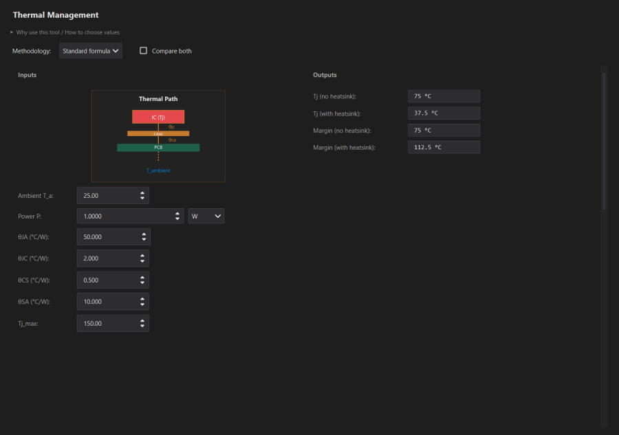
The Outputs are Tj (no heatsink), Tj (with heatsink), and the Margin to Tj_max in each case.
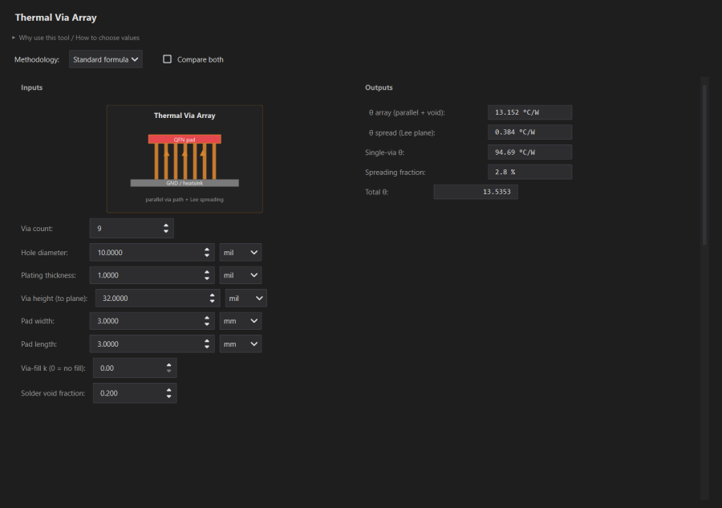
The Outputs include the Single-via θ, the θ array (parallel + void), the θ spread (Lee plane), the Spreading fraction, and the Total θ. Total θ is what your thermal model needs.
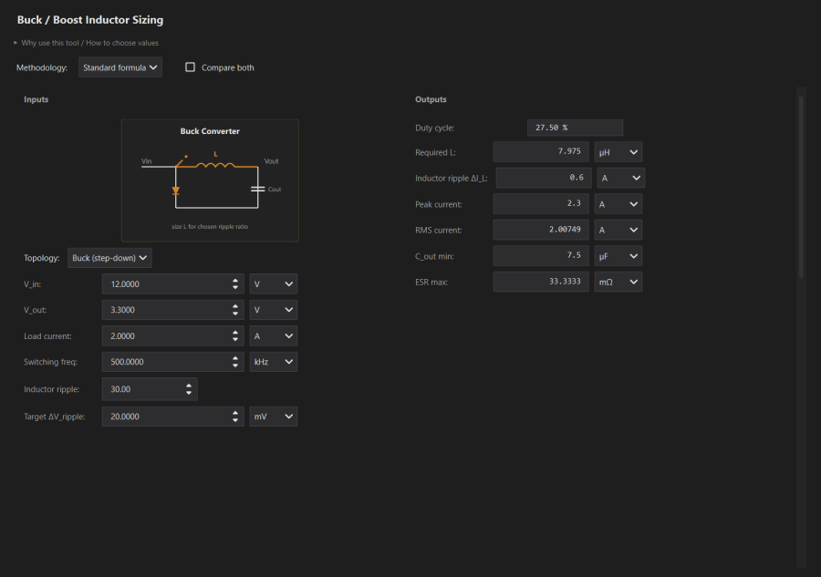
The Outputs include Duty cycle, Required L (the inductor value to size), Inductor ripple ΔI_L, Peak current and RMS current (used to pick the saturation rating), Avg input current, plus the C_out min (output cap) and ESR max for the ripple-voltage budget.
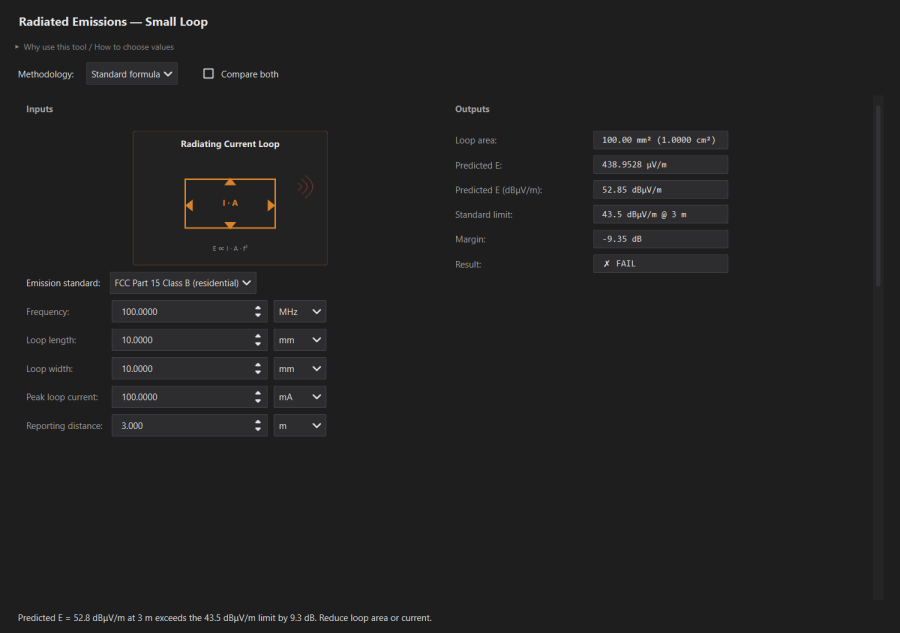
The Outputs are the computed Loop area, the Predicted E-field in both µV/m and dBµV/m, the relevant Standard limit (FCC Class A / B, CISPR Class A / B), and the Margin to that limit with a colour-coded pass/fail Result.
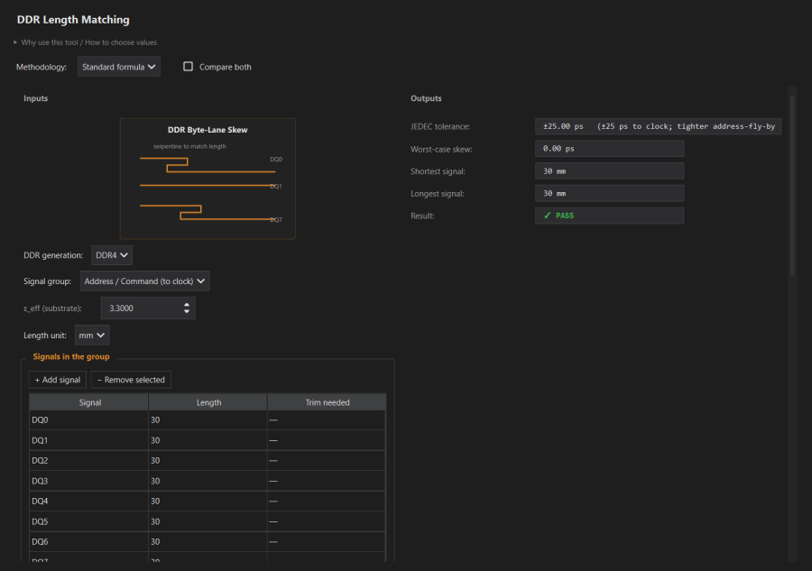
The page has a stackup / standard picker at the top (DDR3 / DDR4 / DDR5 / LPDDR4 / LPDDR5) which auto-loads the JEDEC per-byte-lane tolerance.
The main Input is a per-signal length table — paste in or type the as-routed length of every DQ, DM, DQS, ADDR, CMD, and CK signal. The only standalone input is:
The Outputs are the JEDEC tolerance for the chosen standard, the per-signal deviation from each byte's reference (DQS for DQ, CK for ADDR / CMD), the Worst-case skew, the Shortest and Longest signal, and the colour-coded Result (within / out of spec).
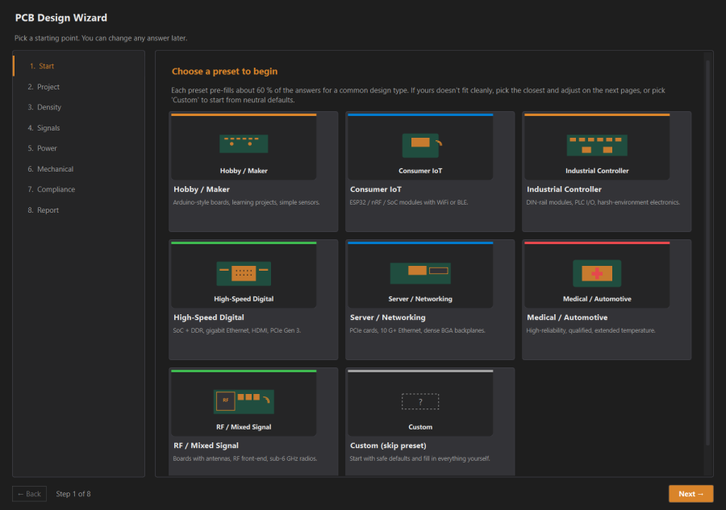
Multi-step questionnaire — there's no single input page. Step 1 picks a preset (e.g. "USB-C charger", "RF prototype", "DDR4 motherboard") or "Custom". Step 2 asks targeted questions about your design (board class, target speeds, manufacturer, layer-count budget, mechanical constraints, RF or pure digital, target volume, BoM-cost sensitivity).
The final step is a Report page summarising the top-3 recommended stackups with rationale, recommended trace / space rules, suggested via schedule, and an export-to-HTML / Markdown button so you can save the report with the project.